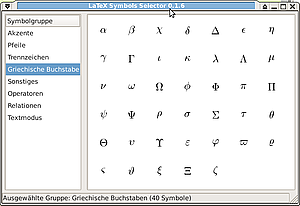

LaTeX Symbols Selector
Dieser Artikel wurde für die folgenden Ubuntu-Versionen getestet:
Ubuntu 16.04 Xenial Xerus
Zum Verständnis dieses Artikels sind folgende Seiten hilfreich:
Wer (vor allem wissenschaftlich) Texte mit LaTeX schreibt,
benötigt an vielen Stellen diverse Sonderzeichen. Derer gibt es
aber so viele, dass die
Liste aller LaTeX-Symbole  in der Fassung vom 12. November 2015 bereits 331 Seiten mit 14030 Symbolen umfasst. Nicht alle LaTeX-Befehle dazu lassen sich merken. In manchen Fällen kann dann die Webanwendung
Detexify weiterhelfen.
Allen jedoch, die nicht gut zeichnen können oder denen die obige
Symbolliste zu groß ist, kann der
LaTeX Symbols Selector , kurz LSS,
weiterhelfen.
in der Fassung vom 12. November 2015 bereits 331 Seiten mit 14030 Symbolen umfasst. Nicht alle LaTeX-Befehle dazu lassen sich merken. In manchen Fällen kann dann die Webanwendung
Detexify weiterhelfen.
Allen jedoch, die nicht gut zeichnen können oder denen die obige
Symbolliste zu groß ist, kann der
LaTeX Symbols Selector , kurz LSS,
weiterhelfen.
Auch wenn LSS seit 2008 nicht mehr entwickelt wird, stellt es dennoch 478 LaTeX-Zeichen in verschiedenen Gruppen bereit und ermöglicht eine direkte Kopie der Zeichen in die Zwischenablage oder den Editor (im Falle von gVIM).
Installation¶
Der LaTeX Symbols Selector befindet sich in einigen Distributionen
bereits in der Paketverwaltung, leider aber nicht unter Ubuntu.
Daher muss man das Programm selbst kompilieren [2].
Der GPL2-lizenzierte Quelltext steht auf der Webseite des Projekts
zum Download bereit. Für die
Kompilierung werden unter Precise neben einem C-Compiler GTK+ 2.0 sowie die Entwicklerpakete von
libgtk3 und libxml2 benötigt [1]:
build-essential
gtk2.0
libgtk-3-dev
libxml2-dev
 mit apturl
mit apturl
Paketliste zum Kopieren:
sudo apt-get install build-essential gtk2.0 libgtk-3-dev libxml2-dev
sudo aptitude install build-essential gtk2.0 libgtk-3-dev libxml2-dev
Danach kann man das Tar-Archiv (in der aktuellen Version 0.1.6) entpacken [5] und kompilieren [2].
Deutsche Sprache¶
LSS liegt derzeit (Juli 2010) nur in englischer Sprache und polnischer
Übersetzung vor. Es gibt aber eine deutsche Sprachdatei, die man nutzen
kann. Man lädt sich die Datei de.po  herunter und
speichert sie im Ordner po ab. Daneben muss man in diesem Ordner noch
die Datei Makefile.in bearbeiten [4], in dem man die Zeile mit den
Übersetzungsdateien wie folgt anpasst:
herunter und
speichert sie im Ordner po ab. Daneben muss man in diesem Ordner noch
die Datei Makefile.in bearbeiten [4], in dem man die Zeile mit den
Übersetzungsdateien wie folgt anpasst:
POFILES = pl.po de.po
Danach muss man erneut make aufrufen und das Programm global
installieren. Führt man LSS nur lokal aus, wird die deutsche
Übersetzung sonst nicht gefunden.

Benutzung¶
Nachdem man das Programm durch den Aufruf von lss gestartet hat [6],
sieht man bereits die "Akzente", die in LaTeX zur Verfügung stehen.
Als Standard kann man nun mit der linken Maustaste doppelt auf einen Eintrag klicken, um diesen
in die Zwischenablage zu kopieren.
Auf der linken Seite sieht man verschiedene Gruppen von Symbolen, die man auswählen kann. Auf die Art findet man relativ schnell ein Zeichen – wenn es denn im LaTeX Symbols Selector geführt wird.
Mit der rechten Maustaste kann man das Optionsmenü aufrufen. Hier kann man einstellen, ob ein Zeichen an die Zwischenablage und/oder den Editor gVIM gesendet werden soll. (Dies wurde aber für den Artikel nicht getestet!)
Daneben lassen sich im Optionsmenü noch einstellen, ob bereits ein
Einzelklick das Symbol kopiert, ob auch die AMS-Symbole angezeigt werden
sollen (AMS steht für American Mathematical Society )
und ob die Symbolnamen, d.h. der LaTeX-Code direkt unter den Zeichen
stehen soll.
Alle Einstellungen befinden sich in der Datei /home/BENUTZERNAME/.lss.xml und können zur Not auch dort geändert werden, wenn man weiß, was die Einträge bedeuten.

- Erstellt mit Inyoka
-
 2004 – 2017 ubuntuusers.de • Einige Rechte vorbehalten
2004 – 2017 ubuntuusers.de • Einige Rechte vorbehalten
Lizenz • Kontakt • Datenschutz • Impressum • Serverstatus -
Serverhousing gespendet von